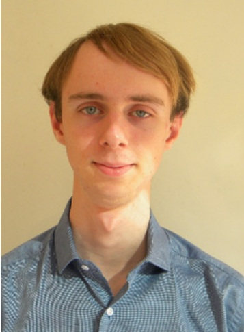
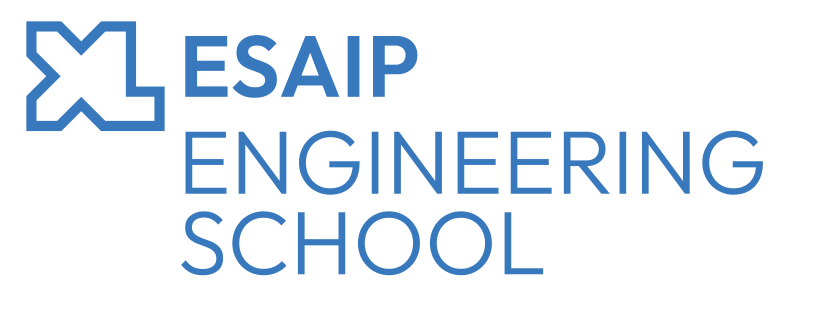

2025 — 2028
Diplôme d'ingénieur · ESAIP
Informatique, intelligence artificielle, traitement de données et génie logiciel.
Étudiant ingénieur en informatique à l’ESAIP, je m’intéresse à l’intelligence artificielle, à la data et au développement logiciel.


01 — PRÉSENTATION
Mon objectif est de développer mes compétences en informatique et en intelligence artificielle afin de participer à des projets et de mettre mes connaissances en pratique.
Diplômé d’un Bachelor en Informatique et Intelligence Artificielle, je poursuis aujourd’hui mes études en quatrième année du cycle ingénieur à l’ESAIP. Je développe des compétences en traitement de données, en intelligence artificielle et en génie logiciel.
Curieux, calme et motivé, je souhaite continuer à apprendre au contact d’équipes techniques et contribuer à des projets utiles.
02 — EXPÉRIENCE
Informatique, intelligence artificielle, traitement de données et génie logiciel.
Sciences de l’ingénieur, technologies numériques, analyse de données et développement.
Amélioration d’une solution d’anonymisation et participation à des activités de recherche.
Extraction de données LinkedIn et mise à jour de bases de données.
Maintenance informatique et recherche sur les systèmes de facturation.
03 — SAVOIR-FAIRE
Programmation, applications et automatisation de tâches.
Fondamentaux des modèles d'apprentissage et du traitement d'images.
Préparation, analyse et exploitation de données.
04 — RÉALISATIONS
Quelques réalisations personnelles et collectives qui illustrent mon intérêt pour la programmation.
Création d’un programme Python pour résoudre le jeu de mots Wordle à l’aide d’une approche algorithmique.
Développement collaboratif d’une application pour organiser et suivre des tâches.
Application combinant interface web, logique applicative et base de données.
Conception d’un outil de calcul scientifique en Python.
Réalisation d’une simulation de propagation et de contamination avec VBA.
D’autres projets et dépôts de code sont disponibles sur mon profil GitHub .
05 — OUVERTURE INTERNATIONALE
Mon parcours s’est enrichi grâce à plusieurs expériences à l’étranger, à des séjours linguistiques et à un engagement bénévole.
06 — CONTACT
Vous avez une opportunité de stage, un projet ou souhaitez simplement échanger ? Je serais ravi d’en discuter.
M'envoyer un e-mail